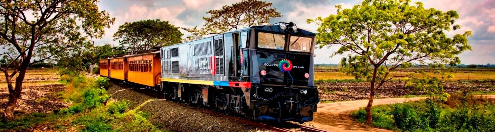
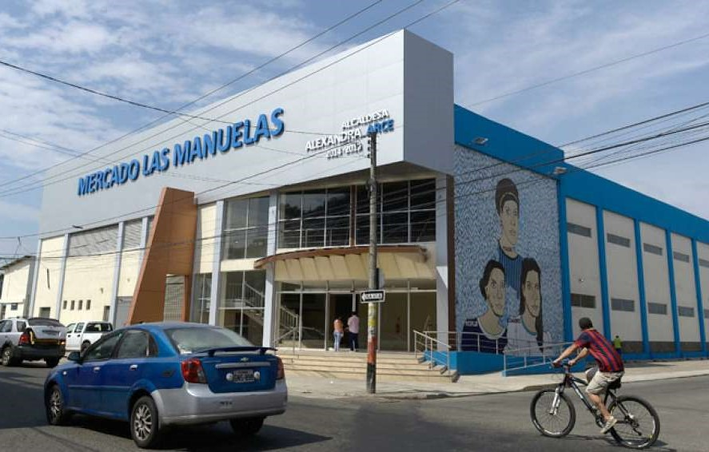

Resumen del tiempo
°F
%
mph
COMERCIO LOCAL
Mercado las Manuelas
La ciudad de Durán abrió este viernes 1 de mayo las puertas del primer mercado aclimatado de la provincia de Guayas. El centro de acopio cuenta con 392 locales, escaleras eléctricas, sistema contra incendios y un programa de separación de desechos.
El palacio de la fritada
Es uno de los sitios más populares en el cantón Durán. Desde hace 50 años deleitan al público con la apetecida fritada. Los esposos Gloria y Carlos son la cuarta generación que continúa con esta tradición familia.
Plaza Durán
El lugar cuenta con un Rooftop karaoke que se activará por las noches, zona de parqueadero y más de 20 locales comerciales entre: comida, heladería, tecnología, moda, belleza, medicina, ocio, entre otras categorías.
PRONOSTICO 5 DIAS
°F
°F
°F
°F
°F